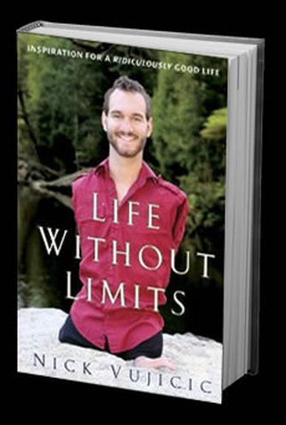

Life Without Limits
Inspiration for a Ridiculously Good Life
In Life Without Limits, Nick writes, “What would your life be if anything were possible?”—and then gives practical advice for realizing a life of fulfillment and happiness.Born limbless, Nick Vujicic overcame his disability to live a rich, fulfilling life—and become a model for anyone seeking true happiness.Now he shares a powerful message around the world—whatever difficulties or seemingly impossible odds stand in your way, the ultimate goal of your life is to find your purpose and fulfill it. Nick offers practical advice for realizing a life of fulfillment and happiness by building trust in others, developing supportive relationships, and gaining strength for the journey. He encourages the reader by showing how he learned to accept what he could not control and focus instead on what he could.
“I do believe my life has no limits! I want you to feel the same way about your life, no matter what your challenges may be. As we begin our journey together, please take a moment to think about any limitations you’ve placed on your life or that you’ve allowed others to place on it. Now think about what it would be like to be free of those limitations. What would your life be if anything were possible?”